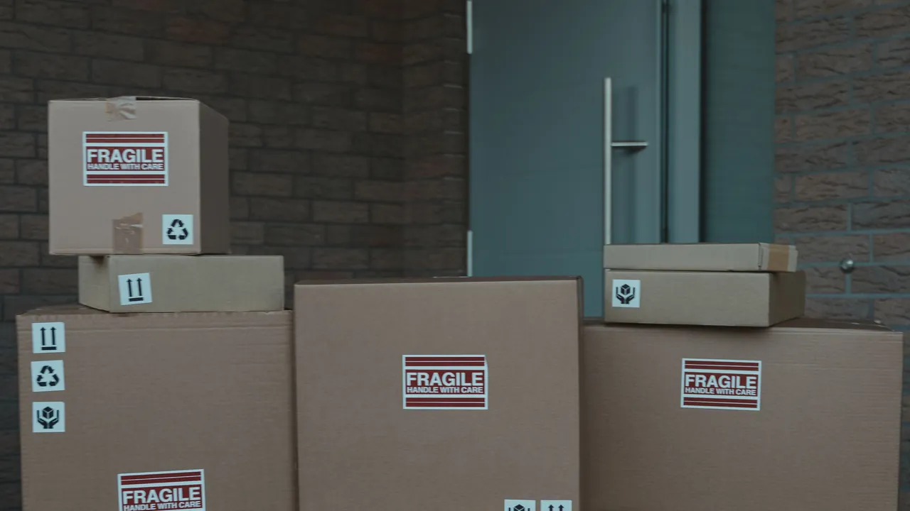

Dalam perjalanan
Berangkat menuju hub tujuan
Perjalanan antartitik menuju Hub Pasar Minggu telah tercatat.
Urutan terbaru ditampilkan paling atas.
Perjalanan antartitik menuju Hub Pasar Minggu telah tercatat.
Paket tercatat keluar dari titik transit untuk melanjutkan perjalanan.
Paket telah tercatat tiba di titik transit.
Pengiriman dimulai dari kawasan Kemayoran, Jakarta Pusat. Kurir pickup: Satria Ahmad F.
Dokumentasi perjalanan

Akan tersedia setelah paket tercatat berstatus Terkirim.
Progres berdasarkan kejadian pengiriman yang telah tercatat.
Pembacaan terbaru atau akhir setiap aset ditampilkan langsung.
Segmen 1
SelesaiPenjemputan awal
Segmen 2
SelesaiPenyimpanan hub
Segmen 3
AktifPerjalanan antarhub
| Waktu observasi | Aset | Suhu | Status |
|---|---|---|---|
| Mobil Boks BOX-01 | −5,1°C | Normal | |
| Mobil Boks BOX-01 | −5,3°C | Normal | |
| Mobil Boks BOX-01 | −5,0°C | Normal | |
| Hub Freezer HF-03 | −4,1°C | Normal | |
| Cooler Bag CB-12 | −5,4°C | Normal |
Menampilkan 5 data terbaru dari maksimal 20 pembacaan per halaman.